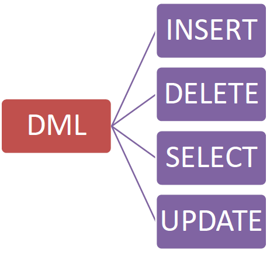

SQL Guide
This page outlines the primary SQL commands for data definition and manipulation. Think of SQL as the language you use to communicate with a database, treating it like a vast digital library.
DML: The Language for Organizing Your Toys
The DML (Data Manipulation Language) is the language we use to 'talk' to our toy box—that is, our database. It provides four basic commands to organize and manage our data.
-
SELECT (To Get): Used to see and pick up a toy from inside the box. If you want to know what's in your box, you use
SELECTto look at the toys that are there. -
INSERT (To Put Away): For putting away a new toy you just got. That's what
INSERTdoes: it adds new data. -
UPDATE (To Fix): To change the color of a toy that's already in the box. If your favorite toy car's color has faded, you use
UPDATEto repaint it. - DELETE (To Throw Away): For throwing out a toy you no longer want, removing it from your box forever.
In short, you use SELECT to get, INSERT to put away, UPDATE to fix, and DELETE to throw away. These four commands are the foundation for interacting with any database.
